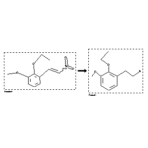

 |
| FA | RX(1); FLST(1); RX(1) |
Reaction (1 of 1)
| Reaction ID | 4220661 |
| Reactant BRN | 2530814 |
| Reactant | w-Nitro-3-methoxy-2-ethoxy-styrol |
| Product BRN | 2721827 |
| Product | 2-ethoxy-3-methoxy-phenethylamine |
| No. of Reaction Details | 1 |
Reaction Details (1 of 1)
| Reaction Classification | Preparation |
| Reagent | Zn-Hg, aq. HCl |
| Solvent | H2O |
| Citation Pointer | 115384; Journal; Delaby,R. et al.; BSCFAS; Bull.Soc.Chim.Fr.; FR; 1960; 231-239; |
Reference (1 of 1)
| Citation Number | 115384 |
| Document Type | Journal |
| Authors | Delaby,R. et al. |
| CODEN | BSCFAS |
| Journal Title | Bull.Soc.Chim.Fr. |
| Language Code | FR |
| Publication Year | 1960 |
| Page | 231-239 |